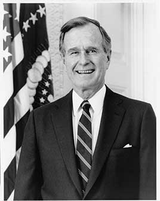

Oversaw the end of the Cold War and led the coalition that drove Iraq out of Kuwait in the Gulf War. He broke his 'no new taxes' pledge in a 1990 budget deal to cut deficits, signed the Americans with Disabilities Act and the Clean Air Act amendments, and lost re-election during a recession.
Shaded areas show the years in office, with a few years before and after for comparison. Budget years run October to September, so a new president's first budget year starts the fall after they take office.
Sept 30, 1988 (end of fiscal 1988): $2.60 trillion → Sept 30, 1992 (end of fiscal 1992): $4.06 trillion
Daily debt figures don't exist before 1993, so these numbers use the fiscal years closest to his term.
Debt as a share of GDP. Above 100% means the debt is bigger than a year of everything the country produces.
Money borrowed each budget year (below the line) or paid down (above).
Jan 1989: 5.4% → Jan 1993: 7.3% (monthly). Chart shows yearly averages.
How much prices rose each year (consumer price index).
What everyday prices and paychecks did while in office.
Prices use the consumer price index (MeasuringWorth). The minimum wage is the federal rate set by Congress.
166 orders, numbered 12668–12833.
Source: National Archives: G.H.W. Bush executive orders (full list of every order).
Let Chinese students in the U.S. stay and work after the 1989 crackdown in Beijing.
Federal RegisterBlocked Iraqi government property and banned trade after Iraq invaded Kuwait.
Federal RegisterSet rules to reduce unnecessary lawsuits brought by and against the federal government.
Federal RegisterRequired federal contractors to tell workers they could not be forced to pay union dues for politics. Revoked by Clinton.
Federal RegisterEncouraged state and local governments to sell or lease roads, bridges and utilities built with federal money.
Federal RegisterOrdered the Coast Guard to stop Haitian boats and return people without asylum hearings. Upheld by the Supreme Court in 1993.
Federal RegisterA pardon wipes out the punishment for a federal crime; a commutation shortens a sentence but leaves the conviction. Counts are by federal fiscal year. He granted clemency less often than any president of the 20th century.
Source: U.S. Dept. of Justice, clemency statistics, which lists every recipient with the crime and sentence.
The crime: Lying to Congress and to investigators, and withholding information, in the Iran-Contra affair. Covered Weinberger, Robert McFarlane, Elliott Abrams, Clair George, Alan Fiers and Duane Clarridge.
Sentence: Weinberger was about to go on trial; others had pleaded guilty or been convicted
Why it drew attention: Independent counsel Lawrence Walsh said the pardons completed the Iran-Contra cover-up. Bush, who was vice president during the affair, had himself withheld his diary from investigators.
SourceThe crime: Illegal contributions to Nixon's 1972 campaign (pleaded guilty 1976)
Sentence: Probation and a $3,000 fine
Why it drew attention: The oil executive had donated to Republican causes, including Bush's inauguration.
SourceThe crime: Bank fraud (pleaded guilty 1988)
Sentence: Probation and restitution
Why it drew attention: His father, a Texas oilman, had donated to Republicans and lobbied for the pardon.
SourceThe same checklist for every president. Tap a row for details and sources.
No articles of impeachment were voted on.
Never charged. Independent counsel Lawrence Walsh criticized him for withholding his diary but brought no charges.
SourceNo member of his own administration was convicted. Chief of staff John Sununu resigned in 1991 after using government planes for personal and political trips.
Iran-Contra (continuing from the Reagan years) and Joseph diGenova, on the search of Bill Clinton's passport files during the 1992 campaign, who found no crimes.
In the 'Iraqgate' affair, critics alleged the administration and Justice Department covered up loans that helped arm Iraq before the Gulf War. A special counsel appointed by Attorney General William Barr found no wrongdoing (1992). State Department officials improperly searched Bill Clinton's passport records during the 1992 campaign, the department's inspector general found.
SourceWhat happened, what was proven, and how it ended.
After pledging 'Read my lips: no new taxes', he agreed to a budget deal that raised taxes to cut the deficit.
Outcome: It helped reduce later deficits but split his party and hurt him in 1992.
SourceHe pardoned six Iran-Contra figures, including the former defense secretary, weeks before his trial.
Outcome: The independent counsel said it completed the cover-up; Bush said the prosecutions were political.
SourceU.S.-backed loans through an Italian bank's Atlanta branch helped Iraq build its military before the Gulf War.
Outcome: Congressional Democrats alleged a cover-up; a Justice Department special counsel found no wrongdoing.
SourcePolitical appointees at the State Department searched Bill Clinton's passport records looking for damaging information during the campaign.
Outcome: The inspector general found it improper; an independent counsel found no crime.
SourceThe president's son was a director of a savings and loan that made loans to his business partners before failing.
Outcome: Regulators found conflicts of interest; he settled without admitting wrongdoing.
SourceWidely quoted remarks, with the context they were said in.
Read my lips: no new taxes.
This will not stand, this aggression against Kuwait.
We were not in the loop.